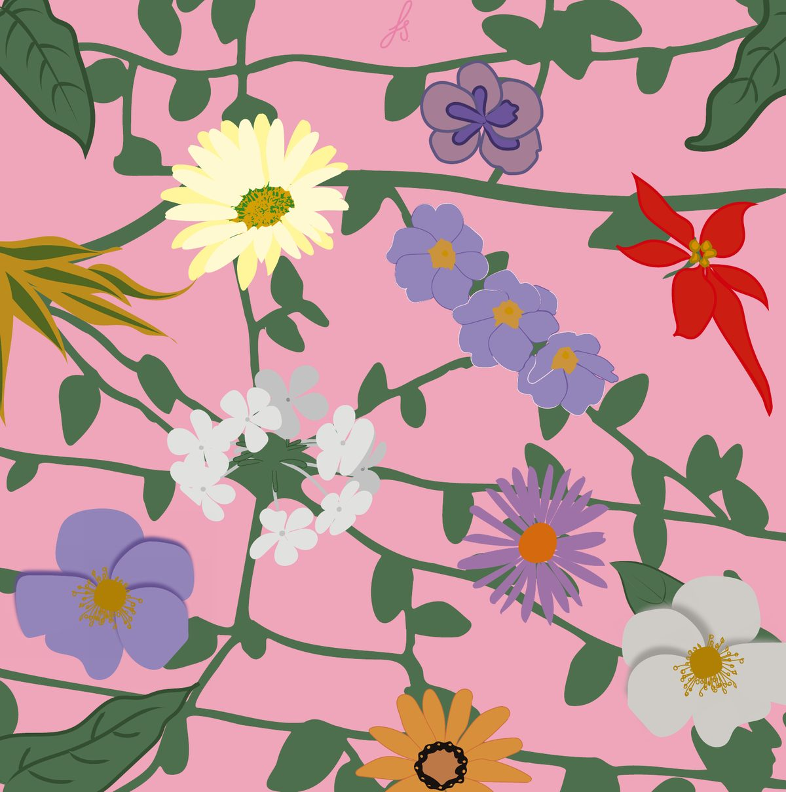
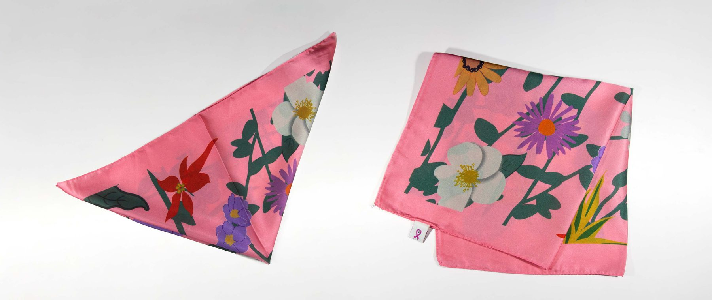

Pañuelo × Lucha contra el Cáncer de MamaScarf × Breast Cancer Awareness
IlustraciónIllustration
En la campaña 2022 de la Lucha contra el Cáncer de Mama, Montevideo Shopping produjo 5.000 pañuelos para comercializar a beneficio de la Comisión de Lucha contra el Cáncer.
For its 2022 Breast Cancer Awareness campaign, Montevideo Shopping produced 5,000 scarves, sold to benefit the Uruguayan Cancer Commission.
Para conocer más, desde la organización compartieron testimonios de quienes transitaron el diagnóstico o fueron acompañantes. Al momento de diseñar el pañuelo, compartí los testimonios con mi madre, y me comentó que una de las experiencias era muy similar a la suya. Ella forma parte de un grupo de apoyo a pacientes con este cáncer.
The organisers shared testimonies from people who had gone through the diagnosis or had supported someone who did. While designing the scarf, I shared them with my mother, who told me one of the stories was very similar to her own. She is part of a support group for patients with this cancer.
Este diseño es un homenaje hacia ella y a su amor por las plantas, pero también a su grupo y todas que enfrentan esta lucha. This design is a tribute to her and her love of plants, but also to her group and everyone facing this fight.
Las plantas representan a las distintas personas que, de una u otra forma, están atravesadas por esta enfermedad: pacientes, personal de salud y personas allegadas. Las ramas simbolizan la red de contención que las une y las sostiene.
The plants represent the different people touched by this illness in one way or another: patients, healthcare workers and loved ones. The branches symbolise the support network that connects and holds them together.
Ver másRead more ↗
